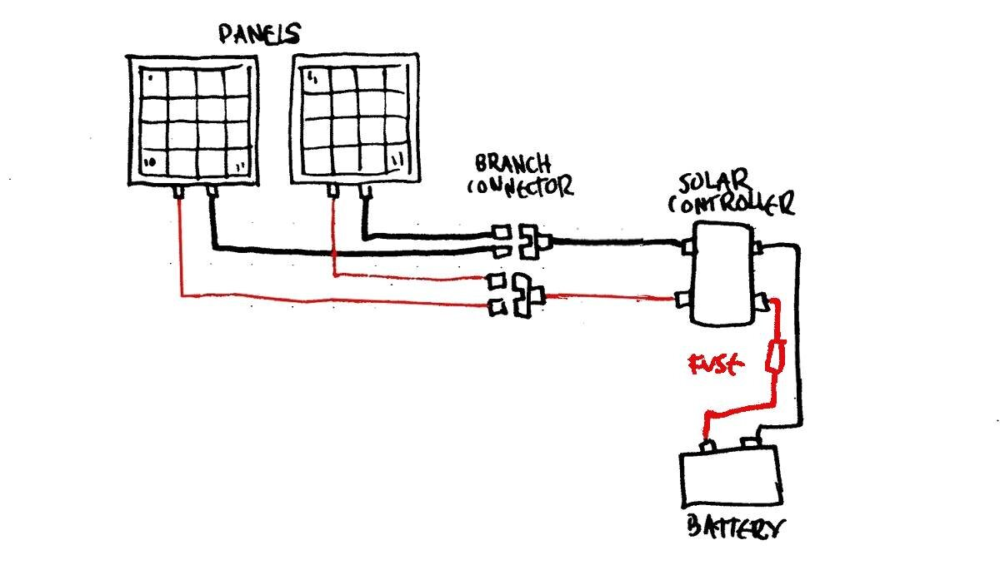

solar tips
Tips, info or tricks we learned on solar along the way. We reserve the right to be wrong (we're still learning).
View our energy and solar setup, or read about power on a sailboat.
What to choose?
The kind of panel you choose depends entirely on space and your budget. Although, someone on a small budget on a small boat may struggle, because the cheaper the panel the larger it is. 100W polycrystalline or thin film panels need to be much larger to match the output of a similarly-sized monocrystalline panel.
Choosing flexible panels is a good option, but they don't last long and will cost more in the long run (unless you choose ETFE panels, see below for coating types).
We have one 90W polyscrystalline panel on deck, and it works well, but we also got it for cheap. It is heavy, and occupies more space than our 100W monocrystalline panel.
Here are the different types of panels available out there, along with their advantages/disadvantages.
Monocrystalline. Darker in color, each cell is cut from a single silicon crystal, they are more efficient overall. They yield the highest output while occupying less space, but do better in warm weather. Up to 26 years of performance. Available in hard and flexible form. Expensive.
Polycrystalline. Lighter, blue in color, the cells are composed of multiple, smaller crystals. They are less efficient than monocrystalline in lower light situations, but are cheaper to manufacture and therefore cheaper to buy. Available as hard panels. Up to 25 years of performance.
Thin film. Solid black in appearance, made by depositing a photovoltaic substance onto a solid smooth surface. The four main substances are Amorphous Silicon, Cadmium Telluride, Copper Indium Gallium Selenide, and Dye-Sensitized Solar Cells—technically all different, but they all fall under the category of thin film panels. They are less efficient, but cheap to produce. High temperatures and shading have less impact on these solar panels.
Types of coating used in flexible solar panels
ETFE( Ethylene tetrafluoroethylene). A fluorine-based plastic. ETFE were created to help make robust flexible panels. It was created with high corrosion resistance and is considered to have the same long life span as tempered glass when used in the solar industry. Unlike most flexible panels, it is less prone to cracking, delamination and corrosion. Up to 10 years lifespan.
PET. A kind of polyester-based plastic. Affordable and light. Has a short lifespan of 5 years, prone to delamination and corrosion.
Deck installation
Install hard panels with an air space underneath to permit the panel to cool down. Warm temperatures produce a decline in the panel voltage of approximately 1V for every 12°C(22°F) to 15°C(27°F) temperature rise.
Parallel wiring
Note that the above diagram is for our boat, and sized to our system. Panels with more wattage will require additional fuses. See below to determine whether or not your system needs other fuses.
On a 12V system solar panels ought to be connected in parallel so the voltage stays the same. With panels in parallel, the amperage of each panel is added up, and the performance of one panel is not dependent on the performance of another. This is important on a boat because at one point or another, one of the panels will have shade from the mast, radar post, boom etc. Multiple panels connected in parallel offer the best performance. Wiring panels in parallel requires a thicker wire gauge to accommodate higher passing current.
To wire multiple panels in parallel you'll need MC4 branch connectors, or T connectors.
Adding panels to a system is easy with branch connectors, this is how you connect them in parallel. A 3-way branch connector accepts 2 wires, and combines them into one, so a connector with two positives becomes one positive, and the same applies to the negative side. These two wires will in turn connect to the solar controller.
In short, things to remember:
- Voltage stays the same
- Amps are added up
- Can perform if one panel is partially shaded
- Thicker wiring
- Requires extra gear like branch connectors
Wire sizing
When it comes to sizing wires, the smaller the number, the bigger the cable (counter-intuitive, we know).
Important to note that UL cables(AWG, American Wire Gauge) are larger than SAE(European standards). Some wires will display wire thickness in mm or inches, to find out their AWG equivalent view this table.
Example: For Pino, we calculated the round-trip distance the wires would take, which was less than 6mv(20ft) with 3% voltage drop. Given that the max power that will ever run through the wires is 10.91 amps, we bought some 10 AWG wire.
Example
- 1x100W + 1x90W panel
- at 17.40V
- 5 Amps each
- Distance to controller is 15 ft
In the sample above, we've got one 100W panel and one 90W panel, with each running to the branch connector at 17.40V, each outputting ~5 Amps (100W closer to 6). Passing the branch connector the wires are now connected in parallel, and we have to add up the amps. We now have 11 amps, while the voltage remains the same at 17.40V. The solar charge controller then takes the 17.40V and regulates it down to 12V (most boats run on 12V systems) and will be charging the batteries at 10.91 amps (see below to see how i got that number).
To calculate how the solar controller will regulate the system from a higher voltage—like 17.40V from our example—to 12V, use the formula below...
The current I in amps (A) is equal to the power P in watts (W), divided by the voltage V in volts (V):
I(A) = P(W) / V(V)
190W / 17.40V = 10.91 Amps
Now that we know how much voltage and amps run at each part of our system we can start sizing the wires, and we can choose a solar controller.
To calculate the wiring gauge for your system, we recommend Circuit Wizard by Blue Sea.
The size of the wiring depends on the distance between each section too.
PWM solar controller
Solar panel voltages are generally higher than battery voltages (our batteries are 12V, our panels are 17.40V), which is good if the battery needs a lot of recharging, but it's not ideal if it is approaching full charge. A PWM solar charge controller monitors the battery voltage and decides how much current it can safely feed into it.
PWM stands for Pulse Width Modulation, which basically describes how it operates. Direct current from the solar panels is cut up into pulses at a certain voltage. The charger detects the voltage of the battery connected to it, and calculates the correct charging voltage to apply, which determines the charging current. The spaces between the voltage pulses are adjusted electronically. The average voltage depends on the time between the pulses.
PWM charge controllers actually waste any surplus voltage from the solar panel, and aren't as efficient as MPPT controllers. But depending on the size of your solar array, a PWM may be entirely fine (this is what we have).
MPPT solar controller
The most efficient type of solar charge controller are MPPT (Maximum Power Point Tracking) at 97%. A MPPT controller is much less efficient in low-power applications, and ought to be used with larger arrays.
For more details, see Marine How-to's mppt vs pwm guide.
Sizing a solar controller
To size a solar controller, add up the amperage from your current solar panels. Panels with combined amperage of 10 amps would require a 15-amp controller.
If you want to charge more than one battery bank (if one is isolated), consider one with a dual charging function. Another option is to add an auxiliary charger to charge the other bank.
Does my system require a fuse between the panel and MC4 connector?
In some cases, you may need to add a fuse between the solar panel and the solar controller (see below if it is something you need to add), and between the controller and the battery (as close to the battery as possible). Fuses are sacrificial, and protect your electricals from damages caused by overcurrent.
Here is how to determine whether or not you need fuses between the panel and the MC4 connectors for your solar installation:
Our solar arrray has a total short circuit current of 11.45A, and the maximum series fuse rating stickers is 20A per panel. This information is usually listed in specs of the solar panels.
If the short circuit current of the entire array is greater than the maximum series fuse rating sticker, fuses must be placed on each wire between the panels and the MC4 connectors. A fuse ought to be installed on the positive connection from the solar controller to the battery (nearest to the battery as is possible).
If the short circuit current of the entire array is less than the maximum series fuse rating sticker, fuses are not required between the panels and the MC4 connectors. A fuse ought to be installed on the positive connection from the solar controller to the battery (nearest to the battery as is possible). This applies to us.
It is necessary to fuse an array at the point where the panels or series strings get combined to prevent potential fires or overheating due to a faulty panel.
Read more about fusing solar arrays, especially if you have a lot of solar.
Fuse between battery and solar controller
To calculate the fuse size needed between the charge controller and battery bank match the amperage rating on the charge controller. For example, if you have a 15Amp charge controller use a 15Amp fuse.
To calculate the fuse size from the panel to the charge controller, add up the amperage of each panel and then add a 25% industry rule to figure out the fuse size.
For example, if you had 2x100W panels that each produces about 5 Amps, you would use this equation:
(2x5x1.25) = 12.5 Amps
In the above example you would need a 12.5 Amp fuse, and we'd recommend a 15 Amp fuse (next biggest number).
On and off switch?
The system ought to have a solar disconnect option, wired after the MC4 connectors (if any) and the solar controller.
Connecting panels with dissimilar voltage
Connecting two panels with different voltages, you will get voltage to lower voltage. If one panel is 17.40V and the other 18V, when connected in parallel the voltage will drop to 17.40V.